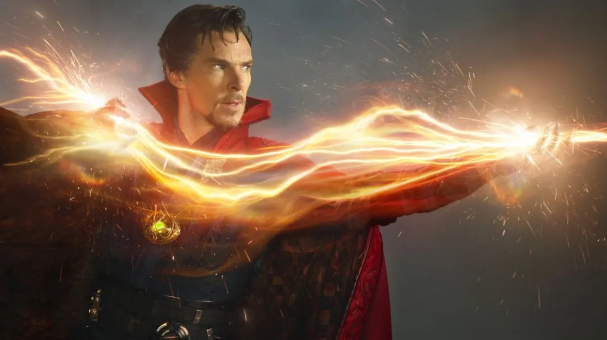

Benedict Cumberbatch seabagai Stephen Vincent Strange (Doctor Strange). Doctor Strange adalah salah satu tokoh yang ada dalam komik Marvel. Tokoh ini diciptakan oleh Steve Ditko. Karakter yang digambarkan mempunyai ilmu magis ini pertama kali muncul pada komik Strange Tales Vol 110 yang diterbitkan pada bulan Juli tahun 1963.
Stephen Vincent Strange atau yang biasa dikenal sebagai Doctor Strange adalah seorang ahli bedah syaraf yang sangat cerdas, namun sifatnya sangat egois dan selalu memikirkan tentang kekayaan dan karirnya. Suatu saat Strange mengalami kecelakaan mobil. Kecelakaan tersebut membuat tangannya cacat karena tulangnya mengalami kerusakan parah. Cacat pada tangannya membuat karirnya sebagai dokter bedah berakhir lantaran tangannya yang selalu gemetar saat melakukan operasi. Dokter Strange pun mencari berbagai macam cara agar tangannya dapat kembali pulih.
Dr. Strange menhabiskan seluruh kekayaannya untuk menyebuhkan tangannya namun hal tersebut tak membuahkan hasil. Ia pun akhirnya menjadi dokter gelap dan melakukan operasi ilegal demi bertahan hidup.
Suatu saat, Strange bertemu dengan seorang pertapa yang dijuluki "The Ancient One" (Si Tetua) di daerah Himalaya. Dr. Strange mendengar kabar jika The Ancient One dapat menyebuhkan tangannya. Awalnya The Ancient One menolak membantu karena Strange yang egois, namun setelah Dr. Strange mengagalkan aksi kejahatan yang dilakukan oleh satu murid The Ancient One yang bernama Baron Mordo, The Ancient One pun akhirnya membantu Strange. Dr. Strange juga diajarkan ilmu mistik oleh The Ancient One. Setelah berguru, Dr. Strange pun kembali ke New York.
Setelah berguru di Himalaya, Dr.Strange menjadi ahli ilmu sihir yang luar biasa. Selain memiliki beberapa matra yang dapat melakukan hal yang mustahil, Dr. Strange juga memiliki jubah yang dapat membuat dirinya terbang. Di Himalaya dirinya juga berlatih mengenai beladiri. Meskipun telah menjadi cenayang, Dr.Strange ternyata masih memiliki kemampuan bedah yang luar biasa, apalagi setelah tangannya pulih, ia dapat melakukan bedah syaraf dengan bantuan sihir miliknya.